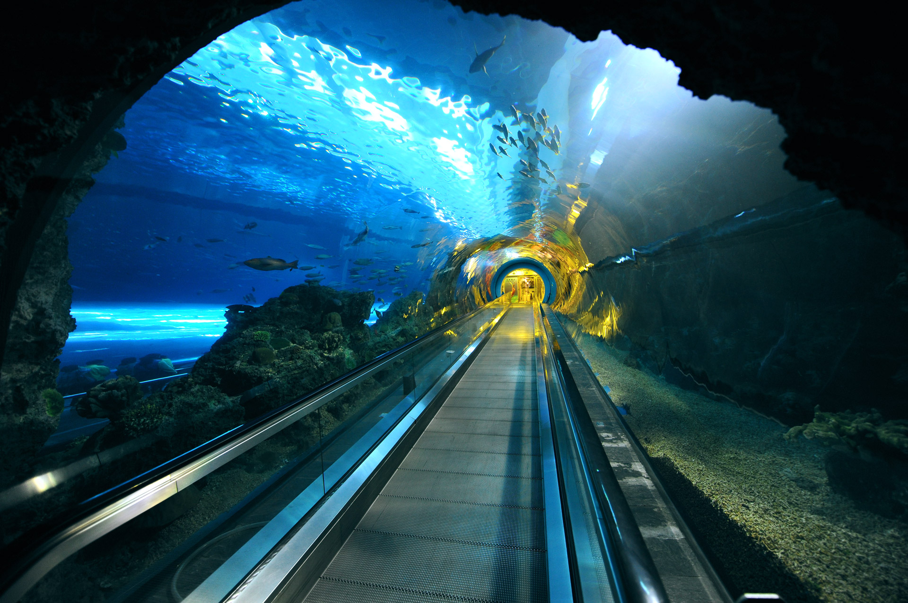
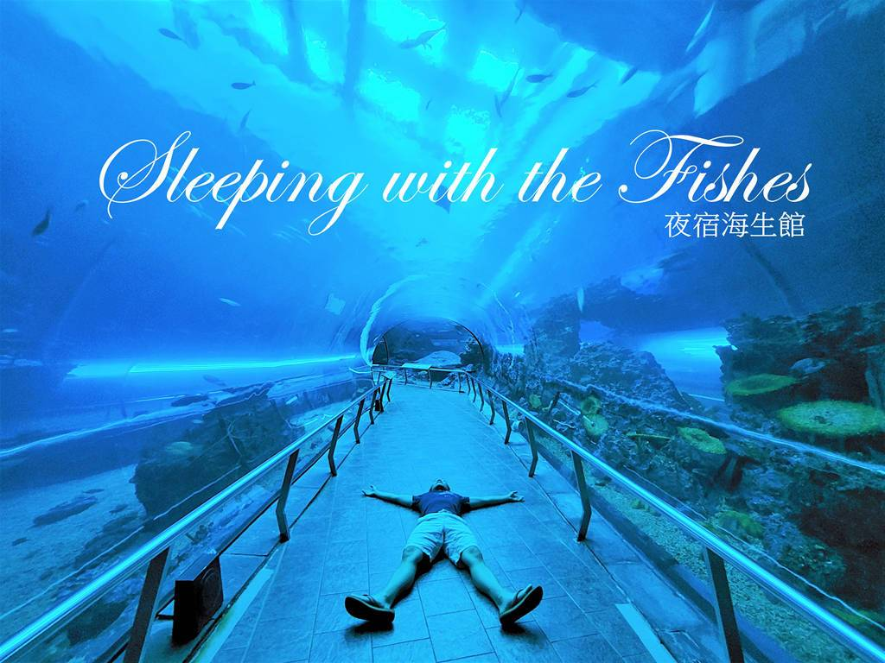

國立海洋生物博物館
台灣水域館
墾丁海生館台灣水域館以水的循環為主題，以一滴水滴的旅行，呈現 出台灣從高山溪流到海洋等多樣的水域生態環境，展區包含：從山倒海、河口區、潮間 帶、兒童探索區、亞潮帶、大洋池
本區最大的看點便是大洋池，是台灣水域館中最大的生態展示區，其展示櫥窗寬 16 公尺、高 4 公尺，在其中悠遊的鯊魚、魟魚等大型魚類是本區的焦點明星，在此駐足可 感受海的壯闊與人的渺小

珊瑚王國館
墾丁海生館的珊瑚王國展區，透過海底隧道、沈船等設計，帶你看到 不同深度的珊瑚礁生態，在這裡也可以感受到沈船如何成為適合海底生物的生存環境
展區規劃包含：珊瑚礁預覽區、海底隧道、沈船探險、海哺類探索。特別要介紹的是 ，這區有一座 80 萬加侖水量的「白鯨池」，住著最聰明活潑海生館的白鯨。置身於透明 隧道時，可以看見這些頑皮的動物優游在你的身邊，近距離接觸。

夜宿活動體驗
墾丁海生館最受矚目的活動肯定是「夜宿海生館」
在海生館閉館後，享受屬於你與海洋生物們的海底夜間旅程，並能與企鵝、白鯨、鯊魚 等海洋明星共眠，睡在海底隧道底下的感覺更是令人驚艷。除了享受以外，館方也非常精 心地準備夜宿專屬的解說課程、工作空間導覽、以及大洋池餵食秀，不論大人小孩都能夠 在此得到非常難忘的體驗感受，另外因應季節不同也有許多不一樣的行程可以挑選哦！
